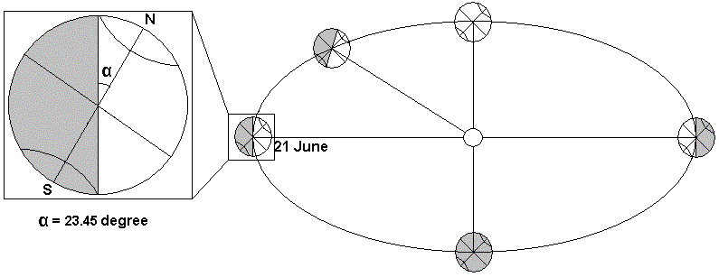

<!DOCTYPE HTML PUBLIC "-//W3C//DTD HTML 4.0 Transitional//EN">
<HTML xmlns="http://www.w3.org/TR/REC-html40" xmlns:v = 
"urn:schemas-microsoft-com:vml" xmlns:o = 
"urn:schemas-microsoft-com:office:office" xmlns:w = 
"urn:schemas-microsoft-com:office:word"><HEAD><TITLE>Global Positioning System</TITLE>
<META http-equiv=Content-Type content="text/html; charset=windows-1252">
<META content=FrontPage.Editor.Document name=ProgId>
<META content="Microsoft FrontPage 5.0" name=GENERATOR>
<META content="Microsoft Word 10" name=Originator><LINK 
href="file:///D:/ACM/ACM%20Problem%20Set/v103-htm01/p6_files/editdata.mso" 
rel=Edit-Time-Data><!--[if gte mso 9]><xml>
 <o:DocumentProperties>
  <o:Author>Administrator</o:Author>
  <o:LastAuthor>Anupam Bhattacharjee</o:LastAuthor>
  <o:Revision>53</o:Revision>
  <o:TotalTime>472</o:TotalTime>
  <o:LastPrinted>2002-02-25T12:32:00Z</o:LastPrinted>
  <o:Created>2002-02-22T05:27:00Z</o:Created>
  <o:LastSaved>2002-10-31T03:01:00Z</o:LastSaved>
  <o:Pages>1</o:Pages>
  <o:Words>298</o:Words>
  <o:Characters>1701</o:Characters>
  <o:Company>BUET</o:Company>
  <o:Lines>14</o:Lines>
  <o:Paragraphs>3</o:Paragraphs>
  <o:CharactersWithSpaces>1996</o:CharactersWithSpaces>
  <o:Version>10.2625</o:Version>
 </o:DocumentProperties>
</xml><![endif]--><!--[if gte mso 9]><xml>
 <w:WordDocument>
  <w:View>Print</w:View>
  <w:Zoom>BestFit</w:Zoom>
  <w:GrammarState>Clean</w:GrammarState>
  <w:BrowserLevel>MicrosoftInternetExplorer4</w:BrowserLevel>
 </w:WordDocument>
</xml><![endif]-->
<STYLE>@font-face {
	font-family: Monotype Corsiva;
}
@page Section1 {size: 595.45pt 841.7pt; margin: 1.0in 1.0in 1.0in 1.0in; mso-header-margin: .5in; mso-footer-margin: .5in; mso-paper-source: 0; }
P.MsoNormal {
	FONT-SIZE: 12pt; FONT-FAMILY: "Times New Roman"; mso-style-parent: ""; mso-pagination: widow-orphan; mso-fareast-font-family: "Times New Roman"; margin-left:0in; margin-right:0in; margin-top:0in; margin-bottom:0pt
}
LI.MsoNormal {
	FONT-SIZE: 12pt; FONT-FAMILY: "Times New Roman"; mso-style-parent: ""; mso-pagination: widow-orphan; mso-fareast-font-family: "Times New Roman"; margin-left:0in; margin-right:0in; margin-top:0in; margin-bottom:0pt
}
DIV.MsoNormal {
	FONT-SIZE: 12pt; FONT-FAMILY: "Times New Roman"; mso-style-parent: ""; mso-pagination: widow-orphan; mso-fareast-font-family: "Times New Roman"; margin-left:0in; margin-right:0in; margin-top:0in; margin-bottom:0pt
}
P {
	FONT-SIZE: 12pt; MARGIN-LEFT: 0in; MARGIN-RIGHT: 0in; FONT-FAMILY: "Times New Roman"; mso-pagination: widow-orphan; mso-fareast-font-family: "Times New Roman"; mso-margin-top-alt: auto; mso-margin-bottom-alt: auto
}
PRE {
	FONT-SIZE: 10pt; MARGIN: 0in 0in 0pt; FONT-FAMILY: "Courier New"; mso-pagination: widow-orphan; mso-fareast-font-family: "Courier New"; tab-stops: 45.8pt 91.6pt 137.4pt 183.2pt 229.0pt 274.8pt 320.6pt 366.4pt 412.2pt 458.0pt 503.8pt 549.6pt 595.4pt 641.2pt 687.0pt 732.8pt
}
TT {
	FONT-FAMILY: "Courier New"; mso-fareast-font-family: "Courier New"; mso-ascii-font-family: "Courier New"; mso-hansi-font-family: "Courier New"; mso-bidi-font-family: "Courier New"
}
SPAN.GramE {
	mso-style-name: ""; mso-gram-e: yes
}
DIV.Section1 {
	page: Section1
}
</STYLE>
<!--[if gte mso 10]>
<style>
 /* Style Definitions */
 table.MsoNormalTable
	{mso-style-name:"Table Normal";
	mso-tstyle-rowband-size:0;
	mso-tstyle-colband-size:0;
	mso-style-noshow:yes;
	mso-style-parent:"";
	mso-padding-alt:0in 5.4pt 0in 5.4pt;
	mso-para-margin:0in;
	mso-para-margin-bottom:.0001pt;
	mso-pagination:widow-orphan;
	font-size:10.0pt;
	font-family:"Times New Roman"}
</style>
<![endif]--><!--[if gte mso 9]><xml>
 <o:shapelayout v:ext="edit">
  <o:idmap v:ext="edit" data="1"/>
 </o:shapelayout></xml><![endif]--></HEAD>
<BODY lang=EN-US style="tab-interval: .5in" bgColor=white>
<DIV class=Section1>
<P class=MsoNormal align=left><B><SPAN style="FONT-SIZE: 24pt"><I><U><font color="#008000">
Global Positioning System</font></U></I></SPAN></B><BR><B><font color="#800000">Input:</font></B> standard input<BR><B><font color="#800000">Output:</font></B> standard output<BR><B><font color="#800000">Time 
Limit:</font></B> 1 second</P>
<P class=MsoNormal><SPAN 
style="mso-bidi-font-weight: bold"><o:p><br>
</o:p>
</SPAN><b><u><font color="#008000">
<span style="font-size: 18pt; mso-bidi-font-size: 12.0pt; mso-bidi-font-family: Arial">
Background</span></font></u></b></P>
<P class=MsoNormal><o:p></P>
<p class="MsoNormal" style="mso-margin-top-alt:auto;mso-margin-bottom-alt:auto" align="justify">
<font color="#000080">One day Mahbub lost his way in a forest. He had no GPS 
receiver. But he had a watch which gives time in GMT and he knew the date. With 
the watch he note the time of sunrise and sunset and calculated his approximate 
position on the earth.</font><p class="MsoNormal" style="mso-margin-top-alt:auto;mso-margin-bottom-alt:auto" align="justify">&nbsp;<P class=MsoNormal>
<b><u><font color="#008000">
<span style="font-size: 18pt; mso-bidi-font-size: 12.0pt; mso-bidi-font-family: Arial">
The Problem</span></font></u></b></P>
<p class="MsoNormal" style="mso-margin-top-alt:auto;mso-margin-bottom-alt:auto" align="justify">&nbsp;<p class="MsoNormal" style="mso-margin-top-alt:auto;mso-margin-bottom-alt:auto" align="justify">
<font color="#000080">The word solstice is a corruption of 2 Latin words that 
mean sun and stand. The days when this occurs are known as the Summer Solstice 
and the Winter Solstice. Very basically the Earth revolves round the Sun, also 
the Earth's axis is tilted relative to the Sun at 23.45°. The relative tilt of 
the Earth's varies to the supposed axis of the Sun as we progress through the 
year. With the respective movements of Sun and Earth at these significant times 
during the year the northern and southern hemispheres are nearer the Sun, or the 
Sun is further north or south. In the northern hemisphere, when the Sun is 
furthest north at the time of the Summer Solstice the Sun is overhead at 
latitude 23.45° north, also known as the Tropic of Cancer. Vernal and Autumnal 
Equinoxes are in fact the point when the Sun passes over the Equator.</font><p class="MsoNormal" style="mso-margin-top-alt:auto;mso-margin-bottom-alt:auto" align="justify">&nbsp;<p class="MsoNormal" style="mso-margin-top-alt:auto;mso-margin-bottom-alt:auto" align="justify">
<font color="#000080">For calculation Mahbub assumes the following:</font><ul>
  <li>
<p class="MsoNormal" style="mso-margin-top-alt:auto;mso-margin-bottom-alt:auto" align="justify">
<font color="#000080">The earth is a perfect spare of radius 6378 km.</font></li>
  <li>
<p class="MsoNormal" style="mso-margin-top-alt:auto;mso-margin-bottom-alt:auto" align="justify">
<font color="#000080">The earth rounds the sun in a perfect circular path in 365 
days (neglect leap years) with a constant speed.</font></li>
  <li>
<p class="MsoNormal" style="mso-margin-top-alt:auto;mso-margin-bottom-alt:auto" align="justify">
<font color="#000080">The earth rounds around its own axis in 24 hours.</font></li>
  <li>
<p class="MsoNormal" style="mso-margin-top-alt:auto;mso-margin-bottom-alt:auto" align="justify">
<font color="#000080">Earth's axis is tilted relative to the Sun at 23.45°.</font></li>
  <li>
<p class="MsoNormal" style="mso-margin-top-alt:auto;mso-margin-bottom-alt:auto" align="justify">
<font color="#000080">21st June 12 pm GMT is the Summer Solstice.</font></li>
  <li>
<p class="MsoNormal" style="mso-margin-top-alt:auto;mso-margin-bottom-alt:auto" align="justify">
<font color="#000080">pi=2*acos(0)</font></li>
</ul>
<p class="MsoNormal" style="mso-margin-top-alt:auto;mso-margin-bottom-alt:auto" align="justify">
<b>NB: There are days at north and south pole, at which the sun shines the whole 
day, or it doesn't shine at all. There will be be no such input.</b><p class="MsoNormal" style="mso-margin-top-alt:auto;mso-margin-bottom-alt:auto" align="justify">
<p class="MsoNormal" style="mso-margin-top-alt:auto;mso-margin-bottom-alt:auto" align="justify"><span style="mso-bidi-font-size: 12.0pt; mso-bidi-font-family: Arial"><font color="#000080">
<SPAN 
style="mso-bidi-font-weight: bold">&nbsp;</span></font></span></o:p><span style="mso-bidi-font-size: 12.0pt; mso-bidi-font-family: Arial"><font color="#000080"><P class=MsoNormal style="TEXT-ALIGN: justify"><B><SPAN 
style="FONT-SIZE: 18pt"><U><font color="#008000">Input</font></U></SPAN></B></P>
<P class=MsoNormal 
style="TEXT-ALIGN: justify; mso-layout-grid-align: none"><o:p>&nbsp;</o:p></P>
<P class=MsoNormal align="justify">Input is consist of several test cases. Each 
test case contains date (dd/mm) and time (hh:mm:ss) of sunrise in GMT, time (hh:mm:ss) 
of sunset in GMT. Input will be terminated by end of file.<br>
<br>
</font><b><u><font color="#008000"><span style="font-size: 18pt">Output</span></font></u></b></P>
<P class=MsoNormal>&nbsp;</P>
<P class=MsoNormal align="justify"><font color="#000080"><span style="mso-bidi-font-size: 12.0pt; mso-fareast-font-family: Times New Roman; mso-bidi-font-family: Arial; mso-ansi-language: EN-US; mso-fareast-language: EN-US; mso-bidi-language: AR-SA; mso-bidi-font-weight: bold">
For each test case print the latitude and the longitude (ddd:mm:ss NSEW). Error 
of at most ±1 minute is acceptable. When it is impossible to calculate either 
latitude or longitude print the line Lost My Way. Each test case should be 
separated by new line.</span></P>
<P class=MsoNormal><SPAN 
style="mso-bidi-font-weight: bold">&nbsp;</o:p></SPAN></P>
<P class=MsoNormal style="mso-layout-grid-align: none"><B><SPAN 
style="FONT-SIZE: 18pt"><U><font color="#008000">Sample 
Input</font></U></SPAN></B><BR><BR>
<SPAN 
style="mso-bidi-font-size: 12.0pt"><font color="#000000">01/01 06:00:00 18:00:00<br>
31/12 10:00:00 22:00:00<br>
15/12 00:33:00 11:14:00<br>
20/09 12:00:00 00:00:00<br>
<br>
</font></SPAN><B><SPAN 
style="FONT-SIZE: 18pt"><U><font color="#008000">Sample Output</font></U></SPAN></B><BR><br>
</font>000:00:00 N 000:00:00 E<br>
000:00:00 N 060:00:00 W<br>
021:40:48 N 091:37:30 E<br>
Lost My Way</P>
<P class=MsoNormal style="mso-layout-grid-align: none">&nbsp;</P>
<font color="#000080">
<DIV class=MsoNormal>
<HR align=left width="100%" SIZE=2>
</DIV><PRE><B><SPAN style="FONT-SIZE: 12pt; FONT-FAMILY: 'Times New Roman'">Problem setter: Shihab Uddin, CSE, BUET</SPAN></B></PRE>
<PRE><font size="3"><span style="font-family: Times New Roman">Thanks to Adrian for clarification.</span></font></PRE>
<PRE><o:p>&nbsp;</o:p></PRE>
<P class=MsoNormal 
style="TEXT-ALIGN: center; tab-stops: 45.8pt 91.6pt 137.4pt 183.2pt 229.0pt 274.8pt 320.6pt 366.4pt 412.2pt 458.0pt 503.8pt 549.6pt 595.4pt 641.2pt 687.0pt 732.8pt" 
align=center><span style="font-size: 14pt; font-family: Monotype Corsiva">&quot;</span><B><SPAN style="FONT-SIZE: 12pt; FONT-FAMILY: 'Times New Roman'">~~ 
Most of the successes are beyond expectations. ~~<o:p></o:p></SPAN></B><span style="font-size: 14pt; font-family: Monotype Corsiva">&quot;</span><o:p>&nbsp;</o:p></P>
</span>
</DIV></BODY></HTML>
